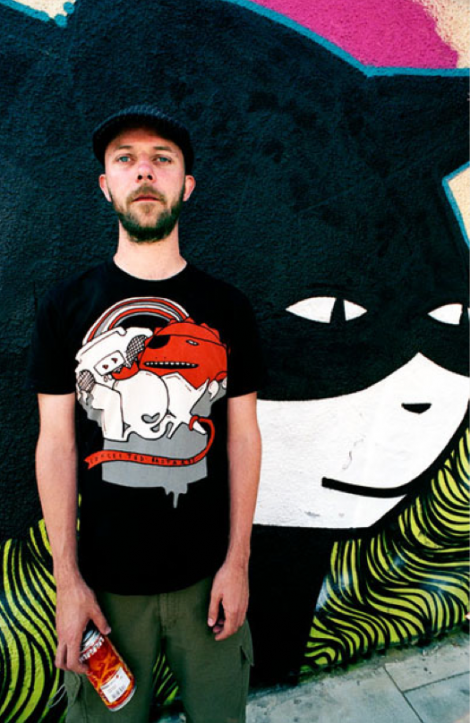

Artist presentation
Kid Acne
Kid Acne is a versatile artist, born in Malawi, Africa, and today based in Sheffield, South Yorkshire alongside fellow artist Phlegm. He began painting graffiti outdoors aged 12 and has been active in that arena for over 20 years. Kid Acne’s creative output transcends myriad genres encompassing fanzines, animation, graffiti, street art, muralism, screen printing, hip-hop and music production. He has exhibited his work all around the world. Acne brings his signature visual aesthetic to his work on the streets which is extremely varied and diverse. One thread of his street work involves painting huge, jocular slogans around the globe in his own handwriting. ’OH MY DAYS’ on the Wall being another addition to this already extensive body of work.